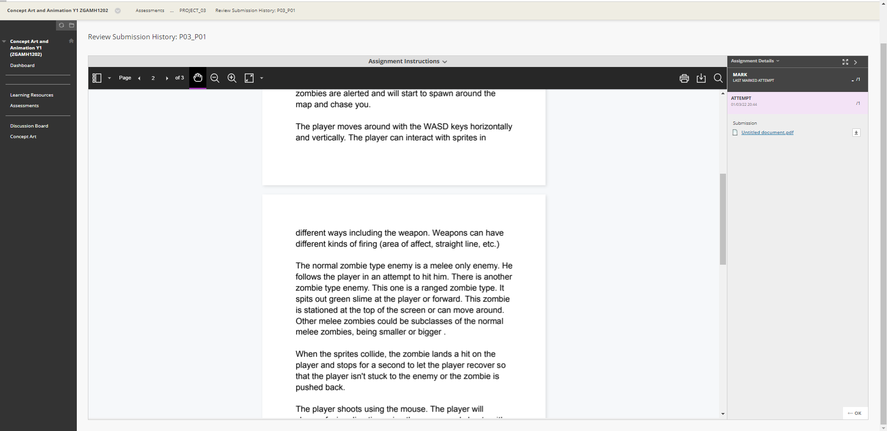

Usability Assessment
Blackboard has a consistency of color. It awlays has white,black,gray and blue colors.
The layout of the website always looks like white board or page, ironic since it is named blackboard.(this is a heuristic too).
The layout of a white background and boxes with blue headings is consistent. The blue color indicating you are about to travel to a more information concentrated page.

When you do click on a blue header on the home page, you are sent to that subjects in depth info. The headings of anything to do with the subject like assessments and labs,
are now in a black box with gray/white text. There are white boxes with "To Do" or "Whats New" headings and blue headings again to go more in depth in those boxes. Once you click on one of the headers inside the black box, you then are met with a simple scroll down page of information.
The website is always consistent with its colors, prompts, menus, boxes and layout.

A counter example of this, is in my opinion, a more hidden list of features and options. On any page, this dropdown option with your name in a box remains
no matter what page you go onto. However, there are some very important elements that are hidden away here. You have a calender,posts, updates, and your marks.
The consistency seems to be lost in this aspect since there are no blue headings and those options are not named. They are presented as images.
A person using this website could get used to the consistency of the page and be lost as to where an important feature like their marks, is hidden away.

User Control
The user always needs to feel in control when using a website. Suprises are nice and all, but not when you have an important task at hand.
The user also dont want to delve into a place they dont recognise. And when they do they need a way to return. Blackboard does a perectly fine job
at giving the user a way to return. There is always the home button at the top right of the page no matter where you go. When confused, a user can
go to the main menu screen.
However, there is one aspect of blackboard that does not give freedom or control to the user. When submitting a file for an assigment, you have control
in being able to freely choose and unchoose what to include in a submission. But that is, until you press submit. There seems to be no option to "Un-submit"
something. This is quite bad for giving users control and/or freedom. Users in this case, very much need an emergency "oh no go back" button.

After submitting, you seem to only be able to review or download your submission. This is quite an example of bad user control and freedom.
Visibility of system status
There are some decent examples of visibility of system status in blackboard. For example, you can go to one of your subjects, pick the
"Assessments" tab, and clearly see that your looking at assessments due to the change of style/layout of that page. Assessments is written at the top
and you can see all your actual assigments in bold below. There is some disparity in layout, color, and font styles.
However, blackboard has a very plain style that can affect this Usability heuristic greatly. The low profile minimalist style texts
that you encounter on the website, are very hard to see. So when you navigate through the website and see texts that look near the same,
you are lost as to what your doing or what part of the website you have arrived at. For example, if you were to look at the centre of the photo,
you would just see text around. There is no clear indicator using color, shapes or borders to cleary communicate to the user that they
are on the dashboard.
Matching between system and the real world
Blackboard matches the real world with its system very well. Since lecturers themselves are the ones who create the sub-headings for the students
to find their work, assigments, notes, etc, lackboard leaves this Usability heurstic in a very loose position. For example, only a mathematics
lecturer and students would understand a sub topic called Matrix notes. Others might see and think that in this module, we take notes on the
Matrix movie. However only maths students would be able to see this which makes for a very good and direct link with matching the blackboard
system and the real world.
Unfortunately, as useful and familiar as this system feels to students who understand the language, terms or concepts that a lecturer
uses, it is also because of the dependancy on the lecturer to make things clear is where this system can fail. A lecturer could assume that
a student understands all the concepts/language of their module and completely confuse and make the student feel lost when navigating through
thier module. For example,